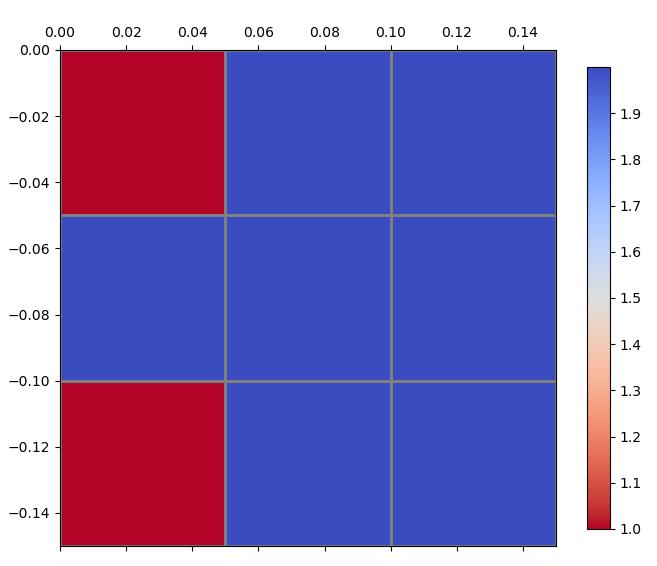

Cell & Coordinate Operations#
Cell coordinate retrieval, cell polygons/points, and map-to-array coordinate conversions.
pyramids.dataset._collaborators.Cell
#
Bases: _Collaborator
Cell-geometry operations on a Dataset.
Owns the real implementations of get_cell_coords,
get_cell_polygons, get_cell_points,
map_to_array_coordinates, and array_to_map_coordinates after
L-2 PR 2.1. Dataset exposes a same-named facade for each method
that delegates to this collaborator, so ds.get_cell_coords(...)
and ds.cell.get_cell_coords(...) are equivalent.
Source code in src/pyramids/dataset/_collaborators.py
4397 4398 4399 4400 4401 4402 4403 4404 4405 4406 4407 4408 4409 4410 4411 4412 4413 4414 4415 4416 4417 4418 4419 4420 4421 4422 4423 4424 4425 4426 4427 4428 4429 4430 4431 4432 4433 4434 4435 4436 4437 4438 4439 4440 4441 4442 4443 4444 4445 4446 4447 4448 4449 4450 4451 4452 4453 4454 4455 4456 4457 4458 4459 4460 4461 4462 4463 4464 4465 4466 4467 4468 4469 4470 4471 4472 4473 4474 4475 4476 4477 4478 4479 4480 4481 4482 4483 4484 4485 4486 4487 4488 4489 4490 4491 4492 4493 4494 4495 4496 4497 4498 4499 4500 4501 4502 4503 4504 4505 4506 4507 4508 4509 4510 4511 4512 4513 4514 4515 4516 4517 4518 4519 4520 4521 4522 4523 4524 4525 4526 4527 4528 4529 4530 4531 4532 4533 4534 4535 4536 4537 4538 4539 4540 4541 4542 4543 4544 4545 4546 4547 4548 4549 4550 4551 4552 4553 4554 4555 4556 4557 4558 4559 4560 4561 4562 4563 4564 4565 4566 4567 4568 4569 4570 4571 4572 4573 4574 4575 4576 4577 4578 4579 4580 4581 4582 4583 4584 4585 4586 4587 4588 4589 4590 4591 4592 4593 4594 4595 4596 4597 4598 4599 4600 4601 4602 4603 4604 4605 4606 4607 4608 4609 4610 4611 4612 4613 4614 4615 4616 4617 4618 4619 4620 4621 4622 4623 4624 4625 4626 4627 4628 4629 4630 4631 4632 4633 4634 4635 4636 4637 4638 4639 4640 4641 4642 4643 4644 4645 4646 4647 4648 4649 4650 4651 4652 4653 4654 4655 4656 4657 4658 4659 4660 4661 4662 4663 4664 4665 4666 4667 4668 4669 4670 4671 4672 4673 4674 4675 4676 4677 4678 4679 4680 4681 4682 4683 4684 4685 4686 4687 4688 4689 4690 4691 4692 4693 4694 4695 4696 4697 4698 4699 4700 4701 4702 4703 4704 4705 4706 4707 4708 4709 4710 4711 4712 4713 4714 4715 4716 4717 4718 4719 4720 4721 4722 4723 4724 4725 4726 4727 4728 4729 4730 4731 4732 4733 4734 4735 4736 4737 4738 4739 4740 4741 4742 4743 4744 4745 4746 4747 4748 4749 4750 4751 4752 4753 4754 4755 4756 4757 4758 4759 4760 4761 4762 4763 4764 4765 4766 4767 4768 4769 4770 4771 4772 4773 4774 4775 4776 4777 4778 4779 4780 4781 4782 4783 4784 4785 4786 4787 4788 4789 4790 4791 4792 4793 4794 4795 4796 4797 4798 4799 4800 4801 4802 4803 4804 4805 4806 4807 4808 4809 4810 4811 4812 4813 4814 4815 4816 4817 4818 4819 4820 4821 4822 | |
get_cell_coords(location='center', domain_only=False)
#
Get coordinates for the center/corner of cells inside the dataset domain.
Returns the coordinates of the cell centers inside the domain (only the cells that do not have nodata value)
Parameters:
| Name | Type | Description | Default |
|---|---|---|---|
location
|
str
|
Location of the coordinates. Use |
'center'
|
domain_only
|
bool
|
True to exclude the cells out of the domain. Default is False. |
False
|
Returns:
| Type | Description |
|---|---|
ndarray
|
np.ndarray: Array with a list of the coordinates to be interpolated, without the NaN. |
ndarray
|
np.ndarray: Array with all the centers of cells in the domain of the DEM. |
Examples:
- Create
Datasetconsists of 1 bands, 3 rows, 3 columns, at the point lon/lat (0, 0).
>>> import numpy as np
>>> arr = np.random.randint(1,3, size=(3, 3))
>>> top_left_corner = (0, 0)
>>> cell_size = 0.05
>>> dataset = Dataset.create_from_array(arr, top_left_corner=top_left_corner, cell_size=cell_size, epsg=4326)
- Get the coordinates of the center of cells inside the domain.
>>> coords = dataset.get_cell_coords()
>>> print(coords)
[[ 0.025 -0.025]
[ 0.075 -0.025]
[ 0.125 -0.025]
[ 0.025 -0.075]
[ 0.075 -0.075]
[ 0.125 -0.075]
[ 0.025 -0.125]
[ 0.075 -0.125]
[ 0.125 -0.125]]
- Get the coordinates of the top left corner of cells inside the domain.
>>> coords = dataset.get_cell_coords(location="corner")
>>> print(coords)
[[ 0. 0. ]
[ 0.05 0. ]
[ 0.1 0. ]
[ 0. -0.05]
[ 0.05 -0.05]
[ 0.1 -0.05]
[ 0. -0.1 ]
[ 0.05 -0.1 ]
[ 0.1 -0.1 ]]
Source code in src/pyramids/dataset/_collaborators.py
4408 4409 4410 4411 4412 4413 4414 4415 4416 4417 4418 4419 4420 4421 4422 4423 4424 4425 4426 4427 4428 4429 4430 4431 4432 4433 4434 4435 4436 4437 4438 4439 4440 4441 4442 4443 4444 4445 4446 4447 4448 4449 4450 4451 4452 4453 4454 4455 4456 4457 4458 4459 4460 4461 4462 4463 4464 4465 4466 4467 4468 4469 4470 4471 4472 4473 4474 4475 4476 4477 4478 4479 4480 4481 4482 4483 4484 4485 4486 4487 4488 4489 4490 4491 4492 4493 4494 4495 4496 4497 4498 4499 4500 4501 4502 4503 4504 4505 4506 4507 4508 4509 4510 4511 4512 4513 4514 4515 4516 4517 4518 4519 4520 4521 | |
get_cell_polygons(domain_only=False)
#
Get a polygon shapely geometry for the raster cells.
Parameters:
| Name | Type | Description | Default |
|---|---|---|---|
domain_only
|
bool
|
True to get the polygons of the cells inside the domain. |
False
|
Returns:
| Name | Type | Description |
|---|---|---|
GeoDataFrame |
GeoDataFrame
|
With two columns, geometry, and id. |
Examples:
- Create
Datasetconsists of 1 band, 3 rows, 3 columns, at the point lon/lat (0, 0).
>>> import numpy as np
>>> arr = np.random.randint(1,3, size=(3, 3))
>>> top_left_corner = (0, 0)
>>> cell_size = 0.05
>>> dataset = Dataset.create_from_array(arr, top_left_corner=top_left_corner, cell_size=cell_size, epsg=4326)
- Get the coordinates of the center of cells inside the domain.
>>> gdf = dataset.get_cell_polygons()
>>> print(gdf)
geometry id
0 POLYGON ((0 0, 0.05 0, 0.05 -0.05, 0 -0.05, 0 0)) 0
1 POLYGON ((0.05 0, 0.1 0, 0.1 -0.05, 0.05 -0.05... 1
2 POLYGON ((0.1 0, 0.15 0, 0.15 -0.05, 0.1 -0.05... 2
3 POLYGON ((0 -0.05, 0.05 -0.05, 0.05 -0.1, 0 -0... 3
4 POLYGON ((0.05 -0.05, 0.1 -0.05, 0.1 -0.1, 0.0... 4
5 POLYGON ((0.1 -0.05, 0.15 -0.05, 0.15 -0.1, 0.... 5
6 POLYGON ((0 -0.1, 0.05 -0.1, 0.05 -0.15, 0 -0.... 6
7 POLYGON ((0.05 -0.1, 0.1 -0.1, 0.1 -0.15, 0.05... 7
8 POLYGON ((0.1 -0.1, 0.15 -0.1, 0.15 -0.15, 0.1... 8
>>> fig, ax = dataset.plot()
>>> gdf.plot(ax=ax, facecolor='none', edgecolor="gray", linewidth=2)
<Axes: >

Source code in src/pyramids/dataset/_collaborators.py
4523 4524 4525 4526 4527 4528 4529 4530 4531 4532 4533 4534 4535 4536 4537 4538 4539 4540 4541 4542 4543 4544 4545 4546 4547 4548 4549 4550 4551 4552 4553 4554 4555 4556 4557 4558 4559 4560 4561 4562 4563 4564 4565 4566 4567 4568 4569 4570 4571 4572 4573 4574 4575 4576 4577 4578 4579 4580 4581 4582 4583 4584 4585 4586 4587 4588 4589 4590 4591 4592 4593 4594 4595 4596 4597 | |
get_cell_points(location='center', domain_only=False)
#
Get a point shapely geometry for the raster cells center point.
Parameters:
| Name | Type | Description | Default |
|---|---|---|---|
location
|
str
|
Location of the point, ["corner", "center"]. Default is "center". |
'center'
|
domain_only
|
bool
|
True to get the points of the cells inside the domain only. |
False
|
Returns:
| Name | Type | Description |
|---|---|---|
GeoDataFrame |
GeoDataFrame
|
With two columns, geometry, and id. |
Examples:
- Create
Datasetconsists of 1 band, 3 rows, 3 columns, at the point lon/lat (0, 0).
>>> import numpy as np
>>> arr = np.random.randint(1,3, size=(3, 3))
>>> top_left_corner = (0, 0)
>>> cell_size = 0.05
>>> dataset = Dataset.create_from_array(arr, top_left_corner=top_left_corner, cell_size=cell_size, epsg=4326)
- Get the coordinates of the center of cells inside the domain.
>>> gdf = dataset.get_cell_points()
>>> print(gdf)
geometry id
0 POINT (0.025 -0.025) 0
1 POINT (0.075 -0.025) 1
2 POINT (0.125 -0.025) 2
3 POINT (0.025 -0.075) 3
4 POINT (0.075 -0.075) 4
5 POINT (0.125 -0.075) 5
6 POINT (0.025 -0.125) 6
7 POINT (0.075 -0.125) 7
8 POINT (0.125 -0.125) 8
>>> fig, ax = dataset.plot()
>>> gdf.plot(ax=ax, facecolor='black', linewidth=2)
<Axes: >

- Get the coordinates of the top left corner of cells inside the domain.
>>> gdf = dataset.get_cell_points(location="corner")
>>> print(gdf)
geometry id
0 POINT (0 0) 0
1 POINT (0.05 0) 1
2 POINT (0.1 0) 2
3 POINT (0 -0.05) 3
4 POINT (0.05 -0.05) 4
5 POINT (0.1 -0.05) 5
6 POINT (0 -0.1) 6
7 POINT (0.05 -0.1) 7
8 POINT (0.1 -0.1) 8
>>> fig, ax = dataset.plot()
>>> gdf.plot(ax=ax, facecolor='black', linewidth=4)
<Axes: >
Source code in src/pyramids/dataset/_collaborators.py
4599 4600 4601 4602 4603 4604 4605 4606 4607 4608 4609 4610 4611 4612 4613 4614 4615 4616 4617 4618 4619 4620 4621 4622 4623 4624 4625 4626 4627 4628 4629 4630 4631 4632 4633 4634 4635 4636 4637 4638 4639 4640 4641 4642 4643 4644 4645 4646 4647 4648 4649 4650 4651 4652 4653 4654 4655 4656 4657 4658 4659 4660 4661 4662 4663 4664 4665 4666 4667 4668 4669 4670 4671 4672 4673 4674 4675 4676 4677 4678 4679 4680 | |
map_to_array_coordinates(points)
#
Convert coordinates of points to array indices.
- map_to_array_coordinates locates a point with real coordinates (x, y) or (lon, lat) on the array by finding the cell indices (row, column) of the nearest cell in the raster.
- The point coordinate system of the raster has to be projected to be able to calculate the distance.
Parameters:
| Name | Type | Description | Default |
|---|---|---|---|
points
|
GeoDataFrame | DataFrame | FeatureCollection
|
|
required |
Returns:
| Type | Description |
|---|---|
ndarray
|
np.ndarray: Array with shape (N, 2) containing the row and column indices in the array. |
Examples:
- Create
Datasetconsisting of 2 bands, 10 rows, 10 columns, at the point lon/lat (0, 0).
>>> import numpy as np
>>> import pandas as pd
>>> arr = np.random.randint(1, 3, size=(2, 10, 10))
>>> top_left_corner = (0, 0)
>>> cell_size = 0.05
>>> dataset = Dataset.create_from_array(arr, top_left_corner=top_left_corner, cell_size=cell_size, epsg=4326)
- We can give the function a DataFrame with x, y columns to array the coordinates of the points that are located within the dataset domain.
>>> points = pd.DataFrame({"x": [0.025, 0.175, 0.375], "y": [0.025, 0.225, 0.125]})
>>> indices = dataset.map_to_array_coordinates(points)
>>> print(indices)
[[0 0]
[0 3]
[0 7]]
- We can give the function a GeoDataFrame with POINT geometry to array the coordinates of the points that locate within the dataset domain.
>>> from shapely.geometry import Point
>>> from geopandas import GeoDataFrame
>>> points = GeoDataFrame({"geometry": [Point(0.025, 0.025), Point(0.175, 0.225), Point(0.375, 0.125)]})
>>> indices = dataset.map_to_array_coordinates(points)
>>> print(indices)
[[0 0]
[0 3]
[0 7]]
Source code in src/pyramids/dataset/_collaborators.py
4682 4683 4684 4685 4686 4687 4688 4689 4690 4691 4692 4693 4694 4695 4696 4697 4698 4699 4700 4701 4702 4703 4704 4705 4706 4707 4708 4709 4710 4711 4712 4713 4714 4715 4716 4717 4718 4719 4720 4721 4722 4723 4724 4725 4726 4727 4728 4729 4730 4731 4732 4733 4734 4735 4736 4737 4738 4739 4740 4741 4742 4743 4744 4745 4746 4747 4748 4749 4750 4751 4752 4753 4754 4755 4756 4757 4758 4759 4760 4761 4762 | |
array_to_map_coordinates(rows_index, column_index, center=False)
#
Convert array indices to map coordinates.
array_to_map_coordinates converts the array indices (rows, cols) to real coordinates (x, y) or (lon, lat).
Parameters:
| Name | Type | Description | Default |
|---|---|---|---|
rows_index
|
List[Number] | ndarray
|
The row indices of the cells in the raster array. |
required |
column_index
|
List[Number] | ndarray
|
The column indices of the cells in the raster array. |
required |
center
|
bool
|
If True, the coordinates will be the center of the cell. Default is False. |
False
|
Returns:
| Type | Description |
|---|---|
tuple[list[Number], list[Number]]
|
Tuple[List[Number], List[Number]]: A tuple of two lists: the x coordinates and the y coordinates of the cells. |
Examples:
- Create
Datasetconsisting of 1 band, 10 rows, 10 columns, at the point lon/lat (0, 0):
>>> import numpy as np
>>> import pandas as pd
>>> arr = np.random.randint(1, 3, size=(10, 10))
>>> top_left_corner = (0, 0)
>>> cell_size = 0.05
>>> dataset = Dataset.create_from_array(arr, top_left_corner=top_left_corner, cell_size=cell_size, epsg=4326)
- Now call the function with two lists of row and column indices:
>>> rows_index = [1, 3, 5]
>>> column_index = [2, 4, 6]
>>> coords = dataset.array_to_map_coordinates(rows_index, column_index)
>>> print(coords) # doctest: +SKIP
([0.1, 0.2, 0.3], [-0.05, -0.15, -0.25])